Маскоты выполнены в векторном стиле «цвет как основа»: сплошное цветовое пятно задаёт форму, поверх которого накладывается контурный графический силуэт, передающий характерные черты типа. Каждый персонаж имеет узнаваемую позу и атрибут. Цвет персонажа соответствует его группе: аналитики – голубой, дипломаты – зелёный, хранители – фиолетовый, искатели – жёлтый.
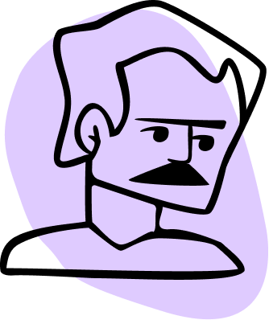
INTJ
Стратег
INTP
Ученый
ENTJ
Командир
ENTP
Полемист
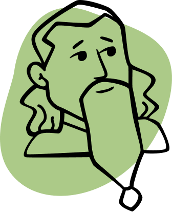
INFJ
Активист
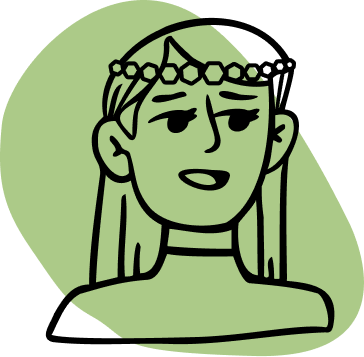
INFP
Посредник
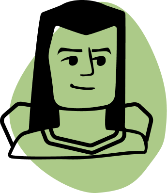
ENFJ
Тренер
ENFP
Борец
ISTJ
Администратор
ISFJ
Защитник
ESTJ
Менеджер
ESFJ
Консул
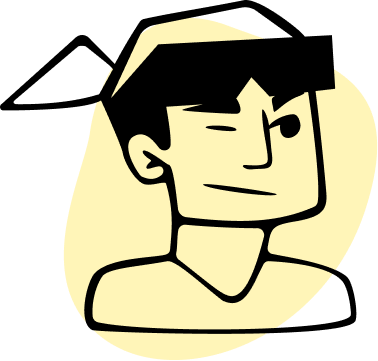
ISTP
Виртуоз
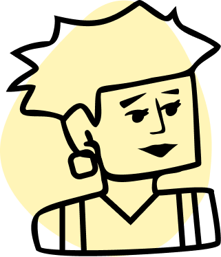
ISFP
Артист
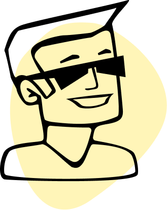
ESTP
Делец
ESFP
Развлекатель
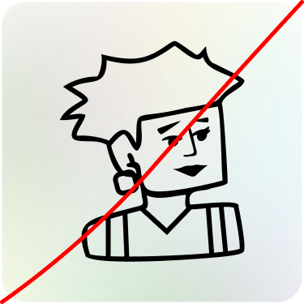
Использование без пятна на цветном фоне
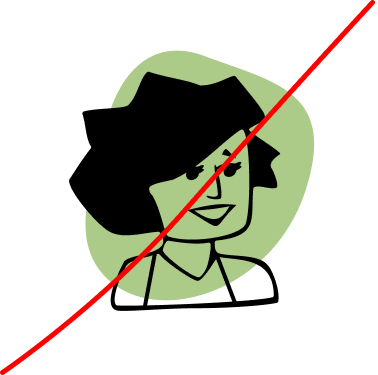
Изменение цвета подложки
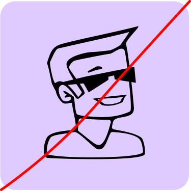
Использование без подложки на "чужом" цвете
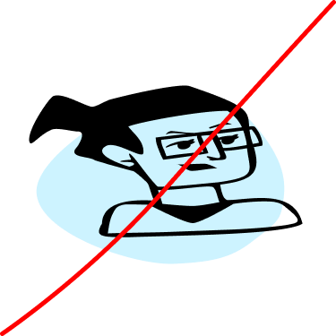
Искажение маскотов